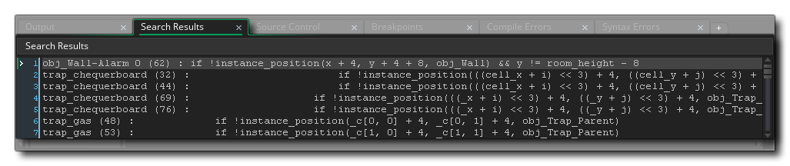

当你第一次在 GameMaker Studio 2 中打开项目时，将在屏幕底部显示 输出停靠栏。 此停靠窗口包含各种选项卡，根据特定情况显示项目的不同输出信息。 可以通过单击 IDE 底部的按钮关闭扩展坞，然后单击  并将停靠窗口中的任何选项卡拖动到另一个扩展坞以更改其位置，或者可以单击
并将停靠窗口中的任何选项卡拖动到另一个扩展坞以更改其位置，或者可以单击  停靠栏内容栏并将其拖动到工作空间以创建独立窗口：
停靠栏内容栏并将其拖动到工作空间以创建独立窗口：

你还可以单击  并将停靠的输出栏拖动到另一个停靠栏中以创建输出窗口拆分视图，如下面的示例所示，其中两个错误输出已放置在同一选项卡中（你也可以慢单击
并将停靠的输出栏拖动到另一个停靠栏中以创建输出窗口拆分视图，如下面的示例所示，其中两个错误输出已放置在同一选项卡中（你也可以慢单击  选项卡以更改其名称）
选项卡以更改其名称）

你可以通过从 布局窗口 中选择 重置布局 来随时恢复 IDE 的默认状态，并且可以从 窗口菜单 重新打开已经关闭的选项卡。 默认的停靠标签说明如下：

常规 输出 窗口显示所有编译器输出，以及添加到游戏中的使用 show_debug_message 函数的消息。 显示的大多数初始信息只是关于如何构建游戏的调试信息，因此通常可以忽略。但是，如果你在为目标平台构建项目时遇到问题，则可以在查找原因时提供帮助，并在与你联系时提供支持信息。 请注意，你可以从 首选项 的 编译 部分更改此处显示的信息量。

你可以使用键盘快捷键
/
+
+“F” 或 编辑 菜单打开 查找和替换 窗口。输入搜索字词后，结果将显示在此窗口中，格式如下：
[物体] - [事件] - [行号]: [查找字符串]
如果在脚本中找到搜索词，那么它将只是：
[脚本] - [行号]: [查找字符串]
然后，你可以双击
任何返回的条目，以在正确的位置打开给定资源进行编辑。

此窗口将显示 SCM 插件的所有输出。 你可以在 此处 找到有关设置源代码管理的更多信息。

断点是你指示 GameMaker Studio 2 在 调试模式 下暂停项目运行的游戏代码或 DnD™ 的位置。 你可以使用键 F9 在游戏循环中的任何位置添加断点，当你这样做时，它将出现在此输出选项卡中。你可以通过单击左侧的复选框启用和禁用它们（不删除它们），如果你在其中一个上使用鼠标右键
，则会出现一个小菜单，允许你删除断点或打开代码/ DnD™ 断点所在位置窗口。

有时你的游戏会遇到语法检查程序可能无法检测到的某种类型的错误，或者与你如何设置编译选项有关。 发生这种情况时，你的游戏将显示 语法错误 或 编译器错误（或两者都显示）并停止运行。任何编译器错误也将显示在 “常规输出” 窗口中，但它们也将单独列在此处（因为它们可能会 “淹没” 在常规输出的其余部分），并且语法错误将在你编写代码时更新（注意键入内容和此窗口中出现的错误之间会有短暂的暂停，以防止报告未完成代码的错误。
编译器错误消息都将遵循相同的格式：
[物体] - [事件] - [行号]: [错误字符串]
如果在脚本中找到编译错误，那么它将只是：
[脚本] - [行号]: [错误字符串]
然后，你可以双击